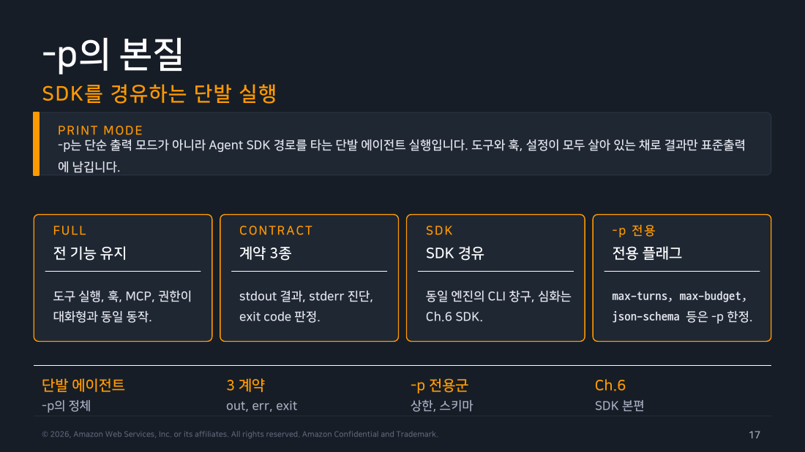
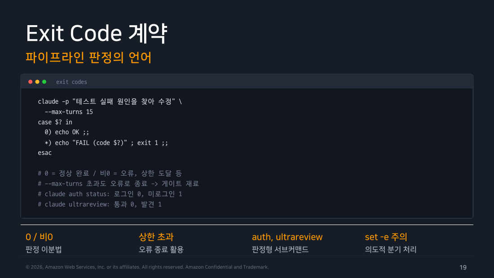
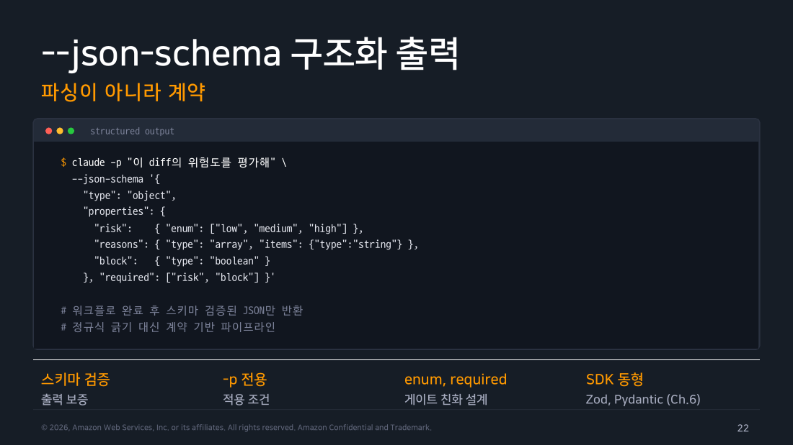

Part 2 — Headless 심화¶
한 줄 요약¶
-p는 사람이 읽을 답을 한 번 받는 명령이 아니라, 표준 입력을 받아 JSON으로 결과를 돌려주고 성공·실패를 종료 코드로 알려주는 단발 실행입니다. 스크립트가 이어받아 쓸 수 있게 설계됐습니다.
왜 알아야 하나¶
사람에게는 그럴듯한 문장 한 줄이면 충분하지만 셸은 성공·실패·비용을 판정해야 합니다. -p의 결과를 텍스트로만 붙이면 인증 실패나 모델 오류를 성공처럼 다음 단계에 넘기기 쉽습니다.
CI 스크립트를 하나 떠올리면 감이 빨리 옵니다. claude -p "리뷰해줘" > review.md 한 줄로 리뷰를 받아 다음 잡에 넘긴다고 합시다. 이 파이프는 리뷰가 제대로 나온 경우와 인증이 만료돼 아무것도 못 한 경우를 구분하지 못합니다. 스크립트 입장에서는 둘 다 "파일이 생겼다"로 끝나기 때문입니다. 이 구분을 하려면 위 스크립트가 실제로 봐야 할 세 가지 — 무엇을 넣었는지(입력), 뭐가 나왔는지(출력), 성공했는지(종료 상태) — 를 따로따로 확인해야 합니다. -p가 답을 한 줄 뱉는 명령이 아니라 이 세 가지를 갖춘 실행이라고 보면 리뷰 성공과 인증 실패를 가를 수 있습니다. 이 파트도 입력 → 출력 → 실패 판정 순서로 봅니다.
1. 입력은 셸의 여섯 표면을 쓴다¶
가장 익숙한 형태는 프롬프트를 인자에 그대로 적는 것입니다.
문제는 검토 대상이 파일일 때입니다. 파일 내용을 프롬프트로 넣는 방법은 크게 두 갈래인데, 한쪽은 조용히 깨지고 다른 한쪽은 안 깨집니다.
깨지는 쪽 — 명령 치환으로 인자를 만듭니다. 명령 치환(command substitution)은 $( ) 안의 명령을 셸이 먼저 실행한 뒤 그 출력을 그 자리에 문자열로 끼워 넣는 문법입니다.
큰따옴표 안에서도 셸은 $와 백틱을 계속 해석합니다. notes.md에 $HOME이나 백틱으로 감싼 조각이 들어 있으면 셸이 그걸 먼저 확장해 버리므로 Claude가 실제로 받는 텍스트는 파일 원문과 다릅니다. 따옴표를 아예 빼면(claude -p $(cat notes.md)) 더 나쁩니다. 출력이 공백마다 잘려 여러 개의 인자로 쪼개집니다. 의도한 프롬프트는 온전히 전달되지 않습니다.
안 깨지는 쪽 — 파이프로 표준 입력에 흘립니다.
파일 내용이 인자가 아니라 표준 입력으로 들어가므로 셸이 중간에서 손댈 것이 없습니다. 이 형태는 아래 "직접 해보기"에서 실제 출력과 함께 확인합니다.
여기서 한 걸음씩 넓히면 나머지 입력 표면이 보입니다.
- 표준 입력 리다이렉트 —
< package.json처럼 파일을 곧바로 표준 입력에 연결합니다. 파이프와 같은 자리로 들어갑니다. - heredoc —
<<'EOF'로 시작해EOF로 끝나는 구간의 여러 줄 텍스트를 셸이 표준 입력으로 넘겨 주는 문법입니다. 구분자에 따옴표를 씌우면('EOF') 그 안에서 확장이 일어나지 않아 긴 지시를 원문 그대로 보낼 수 있습니다. --input-format stream-json— 사람이 아니라 프로그램이 메시지를 한 줄에 하나씩 JSON으로 밀어 넣는 표면입니다.--resume뒤의 새 prompt — 기존 세션을 이어받으면서 새 지시만 붙이는 형태로, 이것도 대화창 없이 들어가는 입력입니다.
입력이 커질수록 인용·길이·민감 데이터 경계를 먼저 점검합니다. 특히 셸을 거치는 표면일수록 인용 규칙이 결과를 조용히 바꿔 놓습니다. 앞에서 본 그대로입니다.
2. JSON 봉투를 결과와 함께 읽는다¶
자동화에서 가장 흔한 실수부터 봅시다. 답변만 필요하니 --output-format json으로 받아 jq -r '.result'로 본문만 꺼내 다음 단계에 넘기는 파이프입니다. 평소에는 잘 돌지만 실행이 --max-turns 상한에 걸려 중단되면 이 파이프는 조용히 통과합니다. 상한에 걸린 결과에는 result가 null로 들어가고 jq -r은 그걸 빈 문자열로 찍기 때문입니다. 다음 단계가 받아 드는 것은 "리뷰가 실패했다"가 아니라 "성공했는데 할 말이 없었다"입니다.
이걸 막으려면 result 옆에 있는 필드를 같이 읽어야 합니다. --output-format json이 돌려주는 것은 답변 문자열 하나가 아니라 답변을 감싼 JSON 객체 하나입니다. 이 객체를 봉투라고 부릅니다. 봉투에는 이런 것들이 들어 있습니다.
result— 답변 본문. 실행이 중간에 끊기면null이 될 수 있습니다.is_error— 이 실행이 실패로 끝났는지 여부.terminal_reason— 어떻게 끝났는지. 정상 종료면"completed"입니다.subtype— 실패의 종류를 좁혀 주는 값.usage·total_cost_usd— 토큰 사용량과 비용.num_turns— 실제로 몇 턴을 돌았는지.
아래 실측에서 성공 봉투는 is_error: false에 terminal_reason: "completed"였고 --max-turns 상한에 걸린 봉투는 is_error: true에 subtype: "error_max_turns", 그리고 result가 아예 null이었습니다.

▲ 교재 슬라이드 17 — -p의 본질 — SDK를 경유하는 단발 실행

▲ 교재 슬라이드 19 — Exit Code 계약
여기까지는 실행이 다 끝난 뒤 봉투를 한 번에 받는 방식이었습니다. stream-json은 같은 내용을 실행 도중에 조금씩 흘려보낼 때 씁니다. 형식은 JSON Lines, 즉 한 줄이 완결된 JSON 객체 하나이고 줄이 쌓이는 대로 읽으면 됩니다.
한 번의 호출을 실제로 흘려보내 보니 system(init·thinking_tokens), assistant, 도구 결과를 담은 user, rate_limit_event가 순서대로 나오고 마지막 한 줄이 type: "result"였습니다. 그 마지막 줄이 --output-format json의 봉투와 같은 내용이므로 스트림을 끝까지 읽은 뒤 tail -1만 파싱해도 동일한 판정을 할 수 있습니다. 진행 상황은 사람에게 흘려 보여 주면서 성공·실패 판정 로직은 앞 절 그대로 재사용할 수 있다는 뜻입니다.
다만 개별 이벤트 필드명은 버전에 따라 달라질 수 있으니 진행률 표시처럼 중간 이벤트에 의존하는 코드는 현행 CLI reference를 함께 봅니다.
3. 스키마·재시도·게이트를 한 덩어리로 둔다¶
봉투가 is_error: false라고 말해도 아직 두 가지를 모릅니다. 그 답이 다음 도구가 파싱할 수 있는 모양인지, 그리고 그 내용을 통과시켜도 되는지입니다. 여기에 쓰는 장치가 넷 있는데, 이름이 낯설 뿐 역할은 한 줄씩이면 정리됩니다.
--json-schema— 형식을 강제하는 것: 출력이 지정한 JSON 구조를 따르도록 요구합니다. “JSON처럼 보이는 텍스트” 대신 다음 도구가 검증할 출력 구조를 받아 내는 표면입니다.jq -e— 통과 기준을 정하는 것:jq의-e는 마지막 출력이false나null이거나 출력이 아예 없으면 종료 상태를 0이 아닌 값으로 돌려줍니다. 덕분에 “심각도가 MAJOR면 멈춘다” 같은 정책을 셸 조건문에 그대로 얹을 수 있습니다.--max-turns·--max-budget-usd— 폭주를 막는 것: 턴 수와 비용에 상한을 걸어 한 번의 실행이 무한정 길어지지 않게 합니다.- 지수 백오프와 지터 — 일시적 실패를 기다리는 것: 재시도 간격을 회차마다 배로 늘리는 것이 지수 백오프고, 거기에 임의의 흔들림을 더해 여러 러너가 같은 순간에 몰려 재시도하지 않게 하는 것이 지터입니다.
이 넷을 한 번의 호출에 순서대로 놓으면 아래 흐름이 됩니다. 먼저 봉투로 실행 자체가 성공했는지 보고, 성공했으면 정책 게이트로 내용을 판정하고, 실패했으면 그것이 기다려서 될 실패인지부터 가릅니다. 형식 검증이 내용의 진실성을 보증하지는 않으므로 스키마 하나만 걸어 두는 것으로는 부족하다는 점이 이 흐름의 전제입니다.
flowchart TD
A["실행"] --> B{"is_error=false?"}
B -->|예| C{"정책 게이트 통과?"}
C -->|예| D["다음 단계"]
C -->|아니오| E["실패로 종료"]
B -->|아니오| F{"일시 오류인가?"}
F -->|예| G["지수 백오프 + 지터 후 재시도"]
F -->|아니오| E
style A fill:#e3f2fd,stroke:#1976d2,color:#000
style D fill:#e8f5e9,stroke:#388e3c,color:#000
style E fill:#ffebee,stroke:#c62828,color:#000
style G fill:#fff3e0,stroke:#ef6c00,color:#000
▲ 교재 슬라이드 22 — --json-schema 구조화 출력
현장 메모
재시도는 모든 오류에 하는 친절이 아닙니다. 인증·스키마·정책 실패는 즉시 멈추고, 과부하·rate limit처럼 일시적인 경우만 제한 횟수와 지터를 둡니다.
직접 해보기¶
실행 환경: macOS 26.6.2 / Claude Code 2.1.251 / jq 1.7.1-apple / 2026-08-29. 격리한 스크래치 저장소(package.json과 검증이 없는 src/pay.js 한 벌)에서 실행했습니다. 개인 설정이 결과를 흔들지 않도록 모든 호출에 --safe-mode를 붙였습니다.
먼저 같은 질문을 세 형식으로 받아 봤습니다.
$ claude -p 'charge 함수의 문제를 한 줄로' --output-format text --safe-mode
`amount`에 대한 입력 검증(음수, 0, NaN, 타입 등)이 전혀 없이 그대로 청구 처리됩니다.
$ claude -p 'charge 함수의 문제를 한 줄로' --output-format json --safe-mode | jq -c '{is_error,subtype,num_turns,total_cost_usd,result}'
{"is_error":false,"subtype":"success","num_turns":3,"total_cost_usd":0.020391,"result":"amount에 대한 입력 검증(음수·NaN·비숫자 등)이 전혀 없어 잘못된 값도 그대로 청구됩니다."}
세 번째 형식에서 바로 걸렸습니다.
$ claude -p 'charge 함수의 문제를 한 줄로' --output-format stream-json --safe-mode
Error: When using --print, --output-format=stream-json requires --verbose
$ echo $?
1
--verbose를 붙이니 JSON Lines 15줄이 흘러나왔고 이벤트 종류는 다음과 같았습니다.
$ claude -p 'charge 함수의 문제를 한 줄로' --output-format stream-json --verbose --safe-mode > stream.jsonl
$ jq -r '[.type, (.subtype//"-")] | @tsv' stream.jsonl
system init
rate_limit_event -
system thinking_tokens
system thinking_tokens
assistant -
assistant -
rate_limit_event -
user -
assistant -
user -
assistant -
user -
assistant -
rate_limit_event -
result success
$ tail -1 stream.jsonl | jq -c '{type,is_error,num_turns,total_cost_usd}'
{"type":"result","is_error":false,"num_turns":4,"total_cost_usd":0.027135000000000003}
§1에서 "안 깨지는 쪽"이라고 한 파이프 입력도 두 가지 형태로 확인했습니다. 프롬프트 인자를 아예 생략하고 지시 자체를 파이프로 주는 형태와, 파일 내용은 파이프로 넘기고 지시는 인자로 주는 형태입니다. 둘 다 셸이 내용을 건드리지 않고 그대로 흘려보냈습니다.
$ echo 'package.json의 dependencies 중 오래된 버전 하나만 이름과 이유를 한 줄로' | claude -p --safe-mode
lodash 4.17.20 — 프로토타입 오염 등 취약점이 패치된 4.17.21 이전 버전입니다.
$ cat package.json | claude -p '표준입력으로 들어온 JSON의 dependencies 개수만 숫자로' --safe-mode
2
구조화 출력은 스키마를 파일로 넘기려다 실패했습니다. --json-schema는 경로가 아니라 JSON 문자열 자체를 받습니다.
$ claude -p 'src/pay.js를 리뷰해 스키마대로 답해' --json-schema review.schema.json --output-format json --safe-mode
Error: --json-schema is not valid JSON: JSON Parse error: Unexpected token '.'
$ claude -p 'src/pay.js를 리뷰해 스키마대로 답해' \
--json-schema "$(cat review.schema.json)" \
--output-format json --safe-mode --allowed-tools Read Grep | jq -r '.result'
{"severity":"MAJOR","file":"src/pay.js","summary":"charge(amount)가 입력 검증 없이 그대로 청구 객체를 반환합니다 (주석에도 명시됨). amount가 음수, 0, NaN, Infinity, 문자열, undefined여도 그대로 통과되어 { ok: true, amount, currency: \"KRW\" }가 반환되므로 잘못된 금액으로 결제가 성사된 것처럼 처리될 위험이 있습니다. amount가 숫자이고 유한하며 0보다 큰지 검증하는 로직을 추가해야 합니다."}
.result는 이렇게 스키마를 걸어도 여전히 문자열이라 jq로 한 번 더 파싱해야 했습니다. 그런데 같은 봉투를 통째로 열어 보니 이미 파싱된 형태로 같은 내용이 한 번 더 들어 있었습니다.
$ claude -p 'src/pay.js를 리뷰해 스키마대로 답해' \
--json-schema "$(cat review.schema.json)" \
--output-format json --safe-mode --allowed-tools Read Grep | jq '{result, structured_output}'
{
"result": "{\"file\":\"src/pay.js\",\"severity\":\"MAJOR\",\"summary\":\"...\"}",
"structured_output": {
"file": "src/pay.js",
"severity": "MAJOR",
"summary": "..."
}
}
structured_output은 문자열이 아니라 스키마 그대로의 JSON 객체입니다. 정책 게이트는 jq -r '.result' | jq -e '...'로 두 번 파싱할 필요 없이 jq -e '.structured_output.severity != "CRITICAL"'처럼 한 번에 값을 꺼내 쓰면 됩니다.
마지막으로 상한을 일부러 넘겨 종료 값을 봤습니다. 파일 두 개를 읽고 git log까지 확인해야 하는 작업에 --max-turns 1을 걸었습니다.
$ claude -p 'src/pay.js와 package.json을 각각 읽고 git log도 확인한 다음 종합 리뷰를 작성해줘' \
--max-turns 1 --output-format json --safe-mode > maxturns.json
$ echo $?
1
$ jq -c '{is_error,subtype,terminal_reason,num_turns,result,total_cost_usd}' maxturns.json
{"is_error":true,"subtype":"error_max_turns","terminal_reason":"max_turns","num_turns":2,"result":null,"total_cost_usd":0.0234964}
직접 해보고 알게 된 것
세 가지가 예상과 달랐습니다.
.result는 스키마를 걸어도 여전히 문자열입니다. 처음엔 이걸 몰라서jq -r '.result' | jq -e '.severity'처럼 두 번 파싱했는데, 봉투를 다시 열어 보니 같은 값이.structured_output에 이미 파싱된 객체로 들어 있었습니다. 게이트는 이쪽을 바로 쓰면 됩니다.--max-turns 1을 걸었는데num_turns는2로 기록됐습니다. 상한과 집계 기준이 정확히 같지 않다는 뜻입니다. “이 작업에 몇 턴이면 되는지”는 상한값이 아니라 실제 로그로 재야 합니다.- 상한에 걸린 봉투는
is_error: true인데도subtype이 아니라terminal_reason을 봐야 원인이 드러난다. 게다가result가null이라.result만 뽑는 파이프에는 빈 문자열이 흘러 들어갑니다. §2 첫머리에서 말한 “성공했는데 할 말이 없었다”가 실제로 재현된 지점입니다.
흔한 오해 바로잡기¶
"JSON 출력이면 exit code만 보면 된다" — 아닙니다. 이번 실행에서 측정한 종료 값은 성공이 0, --max-turns 초과가 1, --verbose 없는 stream-json처럼 사용법이 틀린 경우도 1이었습니다. 상한 초과와 오타가 같은 값으로 돌아오므로 셸 종료 상태는 “실패했다”까지만 알려 주고 “왜 실패했나”는 봉투의 terminal_reason과 subtype이 알려 줍니다. 둘을 함께 읽어야 재시도할 실패와 즉시 멈출 실패를 가릅니다.
정리¶
headless는 결국 사람이 지켜보지 않는 환경에서 돌린다는 뜻입니다. 그래서 입력은 명확히 주고, 출력은 기계가 읽게 만들고, 비용과 턴은 상한으로 막고, 실패는 미리 정한 규칙으로 판정하게 해 둬야 합니다.
이 파트를 한 줄씩 되짚으면 이렇게 됩니다. 입력은 셸을 반드시 한 번 거치므로 파일 내용은 인자에 끼워 넣기보다 표준 입력으로 흘리는 편이 안전합니다. 출력은 .result 하나가 아니라 is_error·terminal_reason·subtype을 같이 읽어야 "빈 성공"에 속지 않습니다. 그리고 형식(--json-schema, 값은 .structured_output으로 바로 꺼낸다)·기준(jq -e)·상한(--max-turns 등)·재시도(지수 백오프와 지터)는 넷 다 있어야 한 번의 호출이 자동화 안에서 판정 가능한 단계가 됩니다.
출처¶
- Claude Code Deep Dive Workshop — Chapter 5 / Part 2: Headless (슬라이드 17~29)
- 공식 문서: CLI reference, headless mode